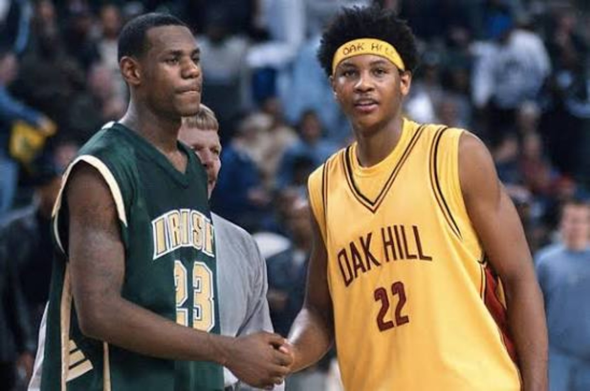
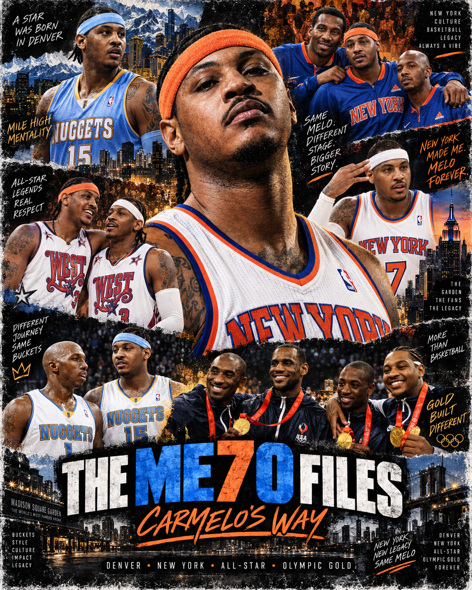
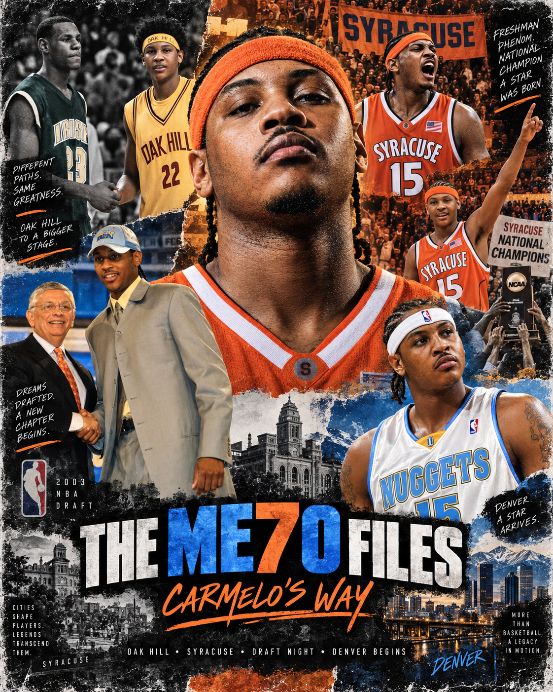
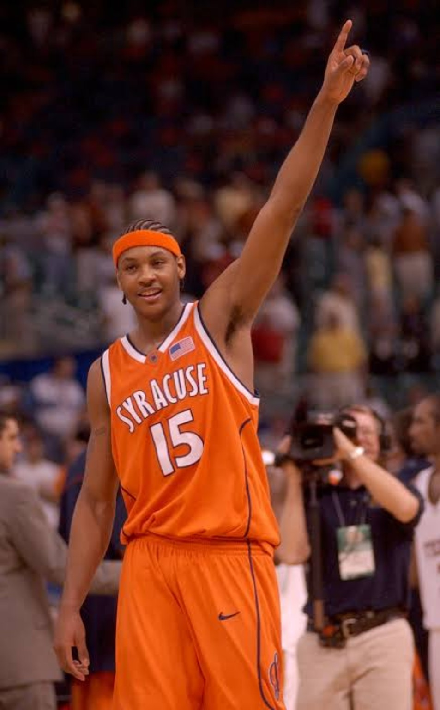
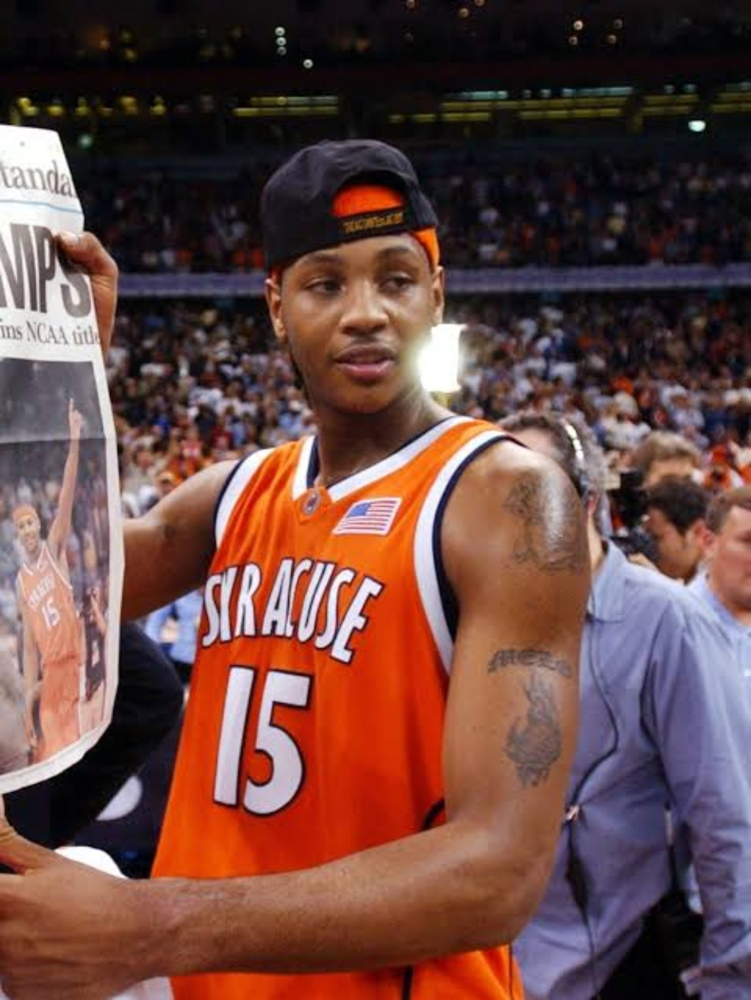
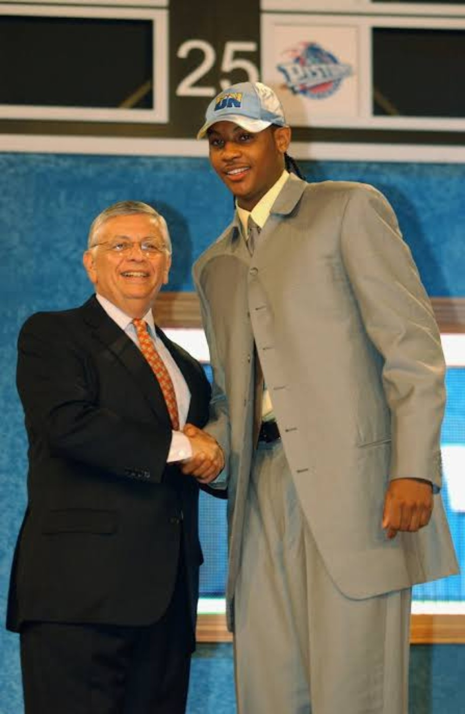
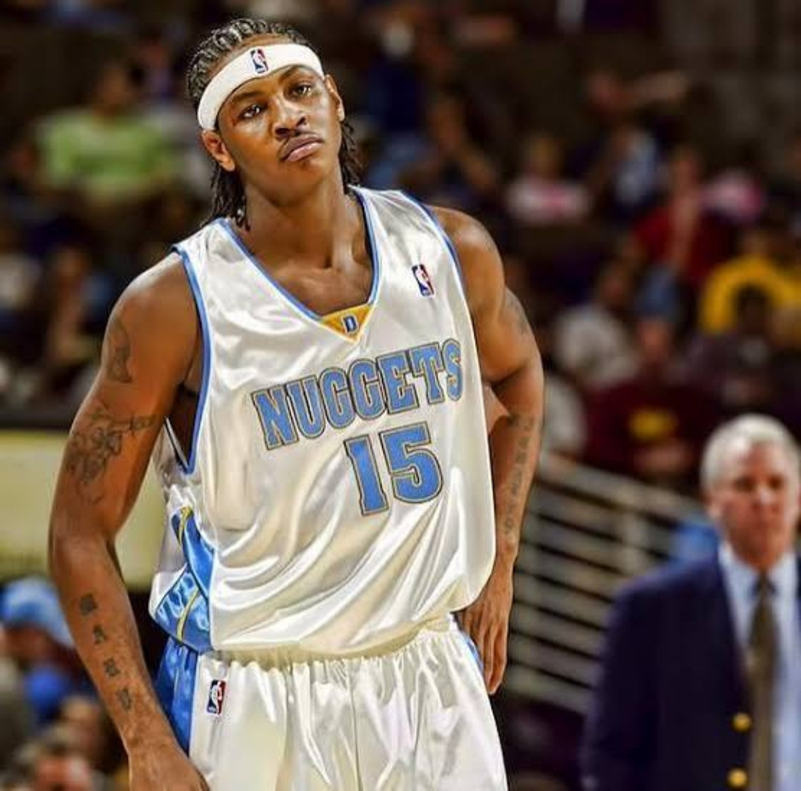
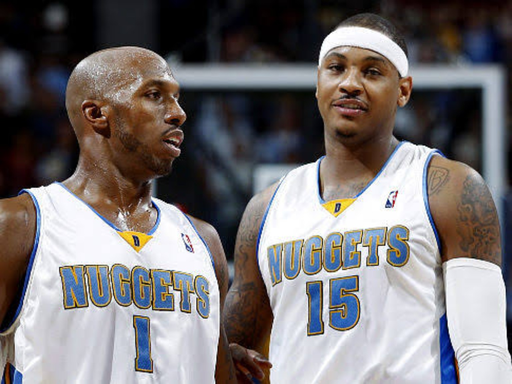
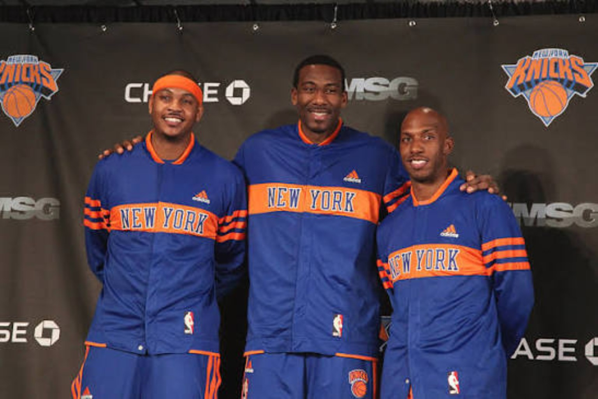

PRELUDE • OAK HILL
BEFORE SYRACUSE.
The elite high-school stage, the national spotlight and the generation Melo entered alongside.
ARCHIVE PRELUDEOak Hill. Syracuse. Denver. New York. Team USA. The scoring. The style. The pressure. The criticism. The respect. This archive goes back through the full Carmelo Anthony story without reducing it to one argument.

Melo's career is easy to flatten into a debate: elite scorer or empty scorer, superstar or almost-superstar, winner or disappointment. The ME7O Files is built to resist that shortcut.
We're going chapter by chapter — what he was, what worked, what didn't, what the teams around him looked like, how the era shaped him and how much of his legacy lives beyond a box score.

Before the Knicks, before the scoring title, before the Olympic résumé and before the arguments about his place among the greats, there was a kid moving from Oak Hill to Syracuse and then straight into one of the most loaded NBA drafts ever.
FILE 001 STARTS AT SYRACUSE.These are the exact photos selected for the archive. Each image is tied to the chapter where it belongs.

The elite high-school stage, the national spotlight and the generation Melo entered alongside.
ARCHIVE PRELUDE
The freshman season that became the foundation of everything that followed.
FIRST FULL FILE
The moment one college season became permanent basketball history.
SYRACUSE CHAPTER
LeBron. Darko. Melo. Wade. Bosh. One of the defining drafts of the century.
PLANNED
The instant scoring, the playoff appearances and the formation of Denver Melo.
PLANNEDTwo iconic scorers, one Denver experiment and one of the most fascinating pairings of the era.
PLANNED
Chauncey, 54 wins, the Western Conference Finals and the best postseason run of Melo's NBA career.
PLANNED
The trade, the expectations, Amar'e, the Garden and the pressure that changed the conversation around Melo.
PLANNEDThe scoring title, 54 wins and the season that best captured peak Knicks Melo.
PLANNEDThe international résumé that became one of the strongest pillars of his legacy.
PLANNEDThe order can evolve as the archive grows. File 001 is the only chapter we're locking first.
The archive is now built. The next step is File 001 — and that story gets written the 4DK way: question by question, take by take, then shaped into the final article.
BACK TO 4DK THROWBACK →